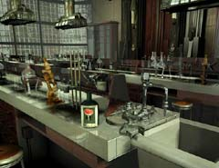
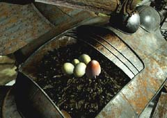

| 概要 | 地図 | |
| 淡いヒント集 | ヒント集 | 的確なヒント集 |
| 攻略最短ルート | Syberia 攻略へ |
| << 前の段階へ | 地域選択へ | 次の段階へ >> |
バロクシュタット
|
駅と大学の往復
  ポンス教授にマンモスの人形を渡すと、実験室へ行くことができるだろう。実験室には重要なアイテムがいくつかある。入り口のそばにある棚にはシリンダー、机には実験バサミとヤンガラコーラの粉末がある。全て無断で拝借しておこう。   あなたはソービニヨン葡萄を入手し、ハシゴの前にいる鳥をどかそうと考えるだろう。ソービニヨン葡萄は、バロクシュタットのどこかに栽培されているのだ。それでは、どこにあるのか? とにかく、ポンス教授や学長、そして駅長に聞くべきだ。すると彼らは必ずと言っていいほど、別の人物に聞くように言ってくるだろう。たらい回しになるのは覚悟の上で、根気よく聞いて回ろう。そうすれば、いずれ駅長が畑へ案内してくれるだろう。  ソービニヨン葡萄をえさに鳥たちをどかすことに成功したら、ハシゴを上ってみよう。上には、鳥の形をしたカラクリ人形があり、そこにはカッコウの卵があるはずだ。

カッコウの卵は、みごとな位置に産み付けられておりいくら手を伸ばしても取ることができない。 実験室から拝借した実験バサミを使えば、卵を安全にかつ確実に手に入れることができる。さて、この卵どのように使うのだろうか。それ以前に、割れないよう持ち運ぶのが難しそうである。 |
| << 前の段階へ | 地域選択へ | 次の段階へ >> |
| 概要 | 地図 | |
| 淡いヒント集 | ヒント集 | 的確なヒント集 |
| 攻略最短ルート | Syberia 攻略へ |
Syberia
| 目次へ戻る | ページの上部へ |